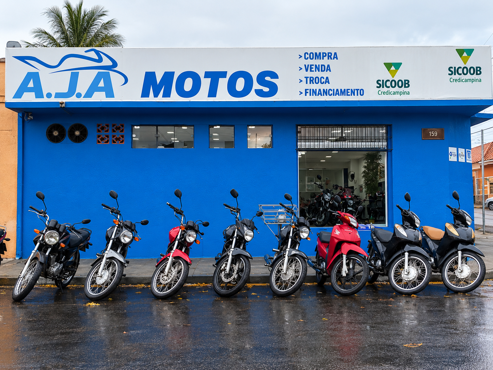

Honda Biz 125 2011
Compacta e prática para deslocamentos urbanos.
Liberdade, estilo e confiança em duas rodas. Explore nosso catálogo e encontre sua próxima moto.
Explorar catálogo ↓
Mais do que encontrar uma moto. É encontrar seu próximo caminho.
Confira as motos da garagem.
Clique em uma moto para ver os detalhes.
Compacta e prática para deslocamentos urbanos.
Praticidade e versatilidade para a rotina.
Uma motocicleta compacta para a cidade.
Estilo trail e versatilidade para diferentes trajetos.
Versátil para a rotina e trajetos variados.
Modelo trail. Consulte os detalhes deste exemplar.
Uma opção versátil para diferentes trajetos.
Motocicleta urbana para acompanhar sua rotina.
Uma opção urbana para quem procura mobilidade.
Proposta prática para os deslocamentos diários.
Uma opção compacta para uso urbano.
Modelo de estilo urbano. Consulte os dados do exemplar.
Uma moto de proposta urbana para o dia a dia.
Modelo trail. Consulte a disponibilidade na garagem.
Motocicleta urbana para seus deslocamentos.
Consulte as condições deste exemplar com a equipe.
*Confirme o ano correto e as informações de cada motocicleta com a AJA Motos.
Nosso objetivo é tornar sua busca por uma moto simples e transparente. Consulte a equipe para confirmar estoque, ano, estado e condições de cada exemplar.
Fale com nossa equipe e tire suas dúvidas.
Conversar pelo WhatsApp ↗